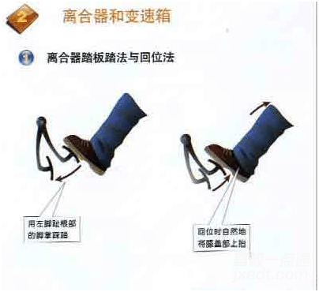

离合器
驾驶室底板上有三个踏板，左边的踏板是离合器踏板，其功用是控制发动机动力与传动装置分离和结合的机件，踩下离合器踏板发动机动力切断，抬起离合器踏板发动机动力传递。离合器主动部分和被动部分开始接触的点叫半联动接力点，半联动在一些复杂路况以及起步、转弯和短距离跟进等会经常使用。
操作步骤
1踏法：用左脚掌踏在踏板上，用膝关节裸利关节伸屈动作踏下和抬起离合器踏板，禁止用脚尖、脚心、脚跟操纵离合器踏板。

2踏下踏板的要领，踏下离合器踏板要迅速、有力，一踏到底。
3抬起踏板的要领，平路起步时抬起离合器踏板要按“快－慢快”的要领操作，即抬起踏板开始时快，抬至半联动点时慢，当离合器主、被动部分安全结合又变快，抬起离合器踏板也可按“快－停－慢”的要领操作。
温馨提示
抬起踏板的要领，平路起步时抬起离合器踏板要按“快－慢快”的要领操作，即抬起踏板开始时快，抬至半联动点时慢，当离合器主、被动部分安全结合又变快，抬起离合器踏板也可按“快－停－慢”的要领操作。